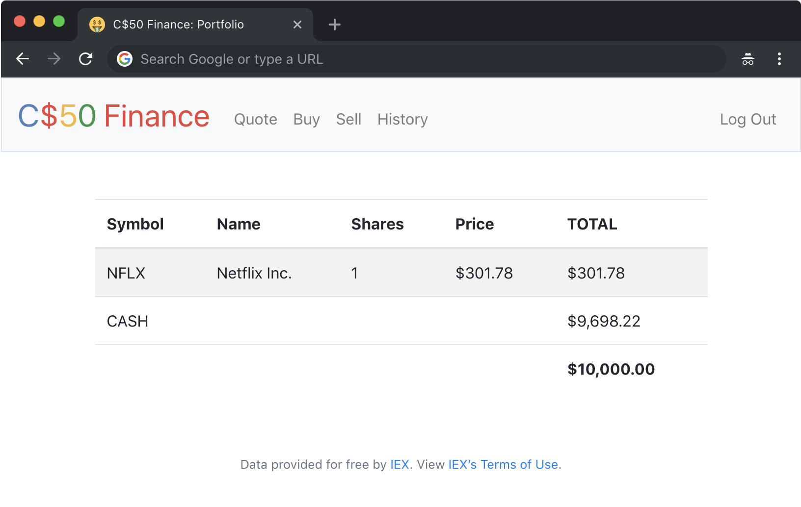

C$50 Finance
Implement a website via which users can “buy” and “sell” stocks, a la the below.

Background
If you’re not quite sure what it means to buy and sell stocks (i.e., shares of a company), head here for a tutorial.
You’re about to implement C$50 Finance, a web app via which you can manage portfolios of stocks. Not only will this tool allow you to check real stocks’ actual prices and portfolios’ values, it will also let you buy (okay, “buy”) and sell (okay, “sell”) stocks by querying IEX for stocks’ prices.
Indeed, IEX lets you download stock quotes via their API (application programming interface) using URLs like https://cloud-sse.iexapis.com/stable/stock/nflx/quote?token=API_KEY. Notice how Netflix’s symbol (NFLX) is embedded in this URL; that’s how IEX knows whose data to return. That link won’t actually return any data because IEX requires you to use an API key (more about that in a bit), but if it did, you’d see a response in JSON (JavaScript Object Notation) format like this:
{
"symbol": "NFLX",
"companyName": "Netflix, Inc.",
"primaryExchange": "NASDAQ",
"calculationPrice": "close",
"open": 317.49,
"openTime": 1564752600327,
"close": 318.83,
"closeTime": 1564776000616,
"high": 319.41,
"low": 311.8,
"latestPrice": 318.83,
"latestSource": "Close",
"latestTime": "August 2, 2019",
"latestUpdate": 1564776000616,
"latestVolume": 6232279,
"iexRealtimePrice": null,
"iexRealtimeSize": null,
"iexLastUpdated": null,
"delayedPrice": 318.83,
"delayedPriceTime": 1564776000616,
"extendedPrice": 319.37,
"extendedChange": 0.54,
"extendedChangePercent": 0.00169,
"extendedPriceTime": 1564876784244,
"previousClose": 319.5,
"previousVolume": 6563156,
"change": -0.67,
"changePercent": -0.0021,
"volume": 6232279,
"iexMarketPercent": null,
"iexVolume": null,
"avgTotalVolume": 7998833,
"iexBidPrice": null,
"iexBidSize": null,
"iexAskPrice": null,
"iexAskSize": null,
"marketCap": 139594933050,
"peRatio": 120.77,
"week52High": 386.79,
"week52Low": 231.23,
"ytdChange": 0.18907500000000002,
"lastTradeTime": 1564776000616
}
Notice how, between the curly braces, there’s a comma-separated list of key-value pairs, with a colon separating each key from its value.
Let’s turn our attention now to this problem’s distribution code!
Distribution
Downloading
$ wget http://cdn.cs50.net/2020/fall/psets/9/finance/finance.zip
$ unzip finance.zip
$ rm finance.zip
$ cd finance
$ ls
application.py helpers.py static/
finance.db requirements.txt templates/
Configuring
Before getting started on this assignment, we’ll need to register for an API key in order to be able to query IEX’s data. To do so, follow these steps:
- Visit iexcloud.io/cloud-login#/register/.
- Select the “Individual” account type, then enter your email address and a password, and click “Create account”.
- Once registered, scroll down to “Get started for free” and click “Select Start” to choose the free plan.
- Once you’ve confirmed your account via a confirmation email, visit https://iexcloud.io/console/tokens.
- Copy the key that appears under the Token column (it should begin with
pk_). - In a terminal window within CS50 IDE, execute:
$ export API_KEY=value
where value is that (pasted) value, without any space immediately before or after the =. You also may wish to paste that value in a text document somewhere, in case you need it again later.
Running
. Start Flask’s built-in web server (within finance/):
$ flask run
Visit the URL outputted by flask to see the distribution code in action. You won’t be able to log in or register, though, just yet!
Via CS50’s file browser, double-click finance.db in order to open it with phpLiteAdmin. Notice how finance.db comes with a table called users. Take a look at its structure (i.e., schema). Notice how, by default, new users will receive $10,000 in cash. But there aren’t (yet!) any users (i.e., rows) therein to browse.
Here on out, if you’d prefer a command line, you’re welcome to use sqlite3 instead of phpLiteAdmin.
Understanding
application.py
Open up application.py. Atop the file are a bunch of imports, among them CS50’s SQL module and a few helper functions. More on those soon.
After configuring Flask, notice how this file disables caching of responses (provided you’re in debugging mode, which you are by default on CS50 IDE), lest you make a change to some file but your browser not notice. Notice next how it configures Jinja with a custom “filter,” usd, a function (defined in helpers.py) that will make it easier to format values as US dollars (USD). It then further configures Flask to store sessions on the local filesystem (i.e., disk) as opposed to storing them inside of (digitally signed) cookies, which is Flask’s default. The file then configures CS50’s SQL module to use finance.db, a SQLite database whose contents we’ll soon see!
Thereafter are a whole bunch of routes, only two of which are fully implemented: login and logout. Read through the implementation of login first. Notice how it uses db.execute (from CS50’s library) to query finance.db. And notice how it uses check_password_hash to compare hashes of users’ passwords. Finally, notice how login “remembers” that a user is logged in by storing his or her user_id, an INTEGER, in session. That way, any of this file’s routes can check which user, if any, is logged in. Meanwhile, notice how logout simply clears session, effectively logging a user out.
Notice how most routes are “decorated” with @login_required (a function defined in helpers.py too). That decorator ensures that, if a user tries to visit any of those routes, he or she will first be redirected to login so as to log in.
Notice too how most routes support GET and POST. Even so, most of them (for now!) simply return an “apology,” since they’re not yet implemented.
helpers.py
Next take a look at helpers.py. Ah, there’s the implementation of apology. Notice how it ultimately renders a template, apology.html. It also happens to define within itself another function, escape, that it simply uses to replace special characters in apologies. By defining escape inside of apology, we’ve scoped the former to the latter alone; no other functions will be able (or need) to call it.
Next in the file is login_required. No worries if this one’s a bit cryptic, but if you’ve ever wondered how a function can return another function, here’s an example!
Thereafter is lookup, a function that, given a symbol (e.g., NFLX), returns a stock quote for a company in the form of a dict with three keys: name, whose value is a str, the name of the company; price, whose value is a float; and symbol, whose value is a str, a canonicalized (uppercase) version of a stock’s symbol, irrespective of how that symbol was capitalized when passed into lookup.
Last in the file is usd, a short function that simply formats a float as USD (e.g., 1234.56 is formatted as $1,234.56).
requirements.txt
Next take a quick look at requirements.txt. That file simply prescribes the packages on which this app will depend.
static/
Glance too at static/, inside of which is styles.css. That’s where some initial CSS lives. You’re welcome to alter it as you see fit.
templates/
Now look in templates/. In login.html is, essentially, just an HTML form, stylized with Bootstrap In apology.html, meanwhile, is a template for an apology. Recall that apology in helpers.py took two arguments: message, which was passed to render_template as the value of bottom, and, optionally, code, which was passed to render_template as the value of top. Notice in apology.html how those values are ultimately used! And here’s why 0:-)
Last up is layout.html. It’s a bit bigger than usual, but that’s mostly because it comes with a fancy, mobile-friendly “navbar” (navigation bar), also based on Bootstrap. Notice how it defines a block, main, inside of which templates (including apology.html and login.html) shall go. It also includes support for Flask’s message flashing so that you can relay messages from one route to another for the user to see.
Specification
register
Complete the implementation of register in such a way that it allows a user to register for an account via a form.
- Require that a user input a username, implemented as a text field whose
nameisusername. Render an apology if the user’s input is blank or the username already exists. - Require that a user input a password, implemented as a text field whose
nameispassword, and then that same password again, implemented as a text field whosenameisconfirmation. Render an apology if either input is blank or the passwords do not match. - Submit the user’s input via
POSTto/register. INSERTthe new user intousers, storing a hash of the user’s password, not the password itself. Hash the user’s password withgenerate_password_hashOdds are you’ll want to create a new template (e.g.,register.html) that’s quite similar tologin.html.
Once you’ve implemented register correctly, you should be able to register for an account and log in (since login and logout already work)! And you should be able to see your rows via phpLiteAdmin or sqlite3.
quote
Complete the implementation of quote in such a way that it allows a user to look up a stock’s current price.
- Require that a user input a stock’s symbol, implemented as a text field whose
nameissymbol. - Submit the user’s input via
POSTto/quote. - Odds are you’ll want to create two new templates (e.g.,
quote.htmlandquoted.html). When a user visits/quotevia GET, render one of those templates, inside of which should be an HTML form that submits to/quotevia POST. In response to a POST,quotecan render that second template, embedding within it one or more values fromlookup.
buy
Complete the implementation of buy in such a way that it enables a user to buy stocks.
- Require that a user input a stock’s symbol, implemented as a text field whose
nameissymbol. Render an apology if the input is blank or the symbol does not exist (as per the return value oflookup). - Require that a user input a number of shares, implemented as a text field whose
nameisshares. Render an apology if the input is not a positive integer. - Submit the user’s input via
POSTto/buy. - Odds are you’ll want to call
lookupto look up a stock’s current price. - Odds are you’ll want to
SELECThow much cash the user currently has inusers. - Add one or more new tables to
finance.dbvia which to keep track of the purchase. Store enough information so that you know who bought what at what price and when.- Use appropriate SQLite types.
- Define
UNIQUEindexes on any fields that should be unique. - Define (non-
UNIQUE) indexes on any fields via which you will search (as viaSELECTwithWHERE).
- Render an apology, without completing a purchase, if the user cannot afford the number of shares at the current price.
- You don’t need to worry about race conditions (or use transactions).
Once you’ve implemented buy correctly, you should be able to see users’ purchases in your new table(s) via phpLiteAdmin or sqlite3.
index
Complete the implementation of index in such a way that it displays an HTML table summarizing, for the user currently logged in, which stocks the user owns, the numbers of shares owned, the current price of each stock, and the total value of each holding (i.e., shares times price). Also display the user’s current cash balance along with a grand total (i.e., stocks’ total value plus cash).
- Odds are you’ll want to execute multiple
SELECTs. Depending on how you implement your table(s), you might find GROUP BY HAVING SUM and/or WHERE of interest. - Odds are you’ll want to call
lookupfor each stock.
sell
Complete the implementation of sell in such a way that it enables a user to sell shares of a stock (that he or she owns).
- Require that a user input a stock’s symbol, implemented as a
selectmenu whosenameissymbol. Render an apology if the user fails to select a stock or if (somehow, once submitted) the user does not own any shares of that stock. - Require that a user input a number of shares, implemented as a text field whose
nameisshares. Render an apology if the input is not a positive integer or if the user does not own that many shares of the stock. - Submit the user’s input via
POSTto/sell. - You don’t need to worry about race conditions (or use transactions).
history
Complete the implementation of history in such a way that it displays an HTML table summarizing all of a user’s transactions ever, listing row by row each and every buy and every sell.
- For each row, make clear whether a stock was bought or sold and include the stock’s symbol, the (purchase or sale) price, the number of shares bought or sold, and the date and time at which the transaction occurred.
- You might need to alter the table you created for
buyor supplement it with an additional table. Try to minimize redundancies.
personal touch
Implement at least one personal touch of your choice:
- Allow users to change their passwords.
- Allow users to add additional cash to their account.
- Allow users to buy more shares or sell shares of stocks they already own via
indexitself, without having to type stocks’ symbols manually. - Require users’ passwords to have some number of letters, numbers, and/or symbols.
- Implement some other feature of comparable scope.
Walkthrough
Testing
To test your code with check50, execute the below.
$ check50 cs50/problems/2021/x/finance
Be sure to test your web app manually too, as by
- inputting alphabetical strings into forms when only numbers are expected,
- inputting zero or negative numbers into forms when only positive numbers are expected,
- inputting floating-point values into forms when only integers are expected,
- trying to spend more cash than a user has,
- trying to sell more shares than a user has,
- inputting an invalid stock symbol, and
- including potentially dangerous characters like
'and;in SQL queries.
Execute the below to evaluate the style of your Python files using style50.
style50 *.py
Staff’s Solution
You’re welcome to stylize your own app differently, but here’s what the staff’s solution looks like!
https://finance.cs50.net/
Feel free to register for an account and play around. Do not use a password that you use on other sites.
It is reasonable to look at the staff’s HTML and CSS.
Hints
- To format a value as a US dollar value (with cents listed to two decimal places), you can use the
usdfilter in your Jinja templates (printing values as{{ value | usd }}instead of{{ value }}. -
Within
cs50.SQLis anexecutemethod whose first argument should be astrof SQL. If thatstrcontains question mark parameters to which values should be bound, those values can be provided as additional named parameters toexecute. See the implementation ofloginfor one such example. The return value ofexecuteis as follows:- If
stris aSELECT, thenexecutereturns alistof zero or moredictobjects, inside of which are keys and values representing a table’s fields and cells, respectively. - If
stris anINSERT, and the table into which data was inserted contains an autoincrementingPRIMARY KEY, thenexecutereturns the value of the newly inserted row’s primary key. - If
stris aDELETEor anUPDATE, thenexecutereturns the number of rows deleted or updated bystr.
- If
- Recall that
cs50.SQLwill log to your terminal window any queries that you execute viaexecute(so that you can confirm whether they’re as intended). - Be sure to use question mark-bound parameters (i.e., a paramstyle of
named) when calling CS50’sexecutemethod, a laWHERE ?. Do not use f-strings,formator+(i.e., concatenation), lest you risk a SQL injection attack. - If (and only if) already comfortable with SQL, you’re welcome to use SQLAlchemy Core or Flask-SQLAlchemy (i.e., SQLAlchemy ORM) instead of
cs50.SQL. - You’re welcome to add additional static files to
static/. - Odds are you’ll want to consult Jinja’s documentation when implementing your templates.
- It is reasonable to ask others to try out (and try to trigger errors in) your site.
- You’re welcome to alter the aesthetics of the sites, as via
- https://bootswatch.com/,
- https://getbootstrap.com/docs/4.1/content/,
- https://getbootstrap.com/docs/4.1/components/, and/or
- https://memegen.link/.
- You may find Flask’s documentation and Jinja’s documentation helpful!
FAQs
ImportError: No module named ‘application’
By default, flask looks for a file called application.py in your current working directory (because we’ve configured the value of FLASK_APP, an environment variable, to be application.py). If seeing this error, odds are you’ve run flask in the wrong directory!
OSError: [Errno 98] Address already in use
If, upon running flask, you see this error, odds are you (still) have flask running in another tab. Be sure to kill that other process, as with ctrl-c, before starting flask again. If you haven’t any such other tab, execute fuser -k 8080/tcp to kill any processes that are (still) listening on TCP port 8080.
How to Submit
Execute the below, logging in with your GitHub username and password when prompted. For security, you’ll see asterisks (*) instead of the actual characters in your password.
submit50 cs50/problems/2021/x/finance